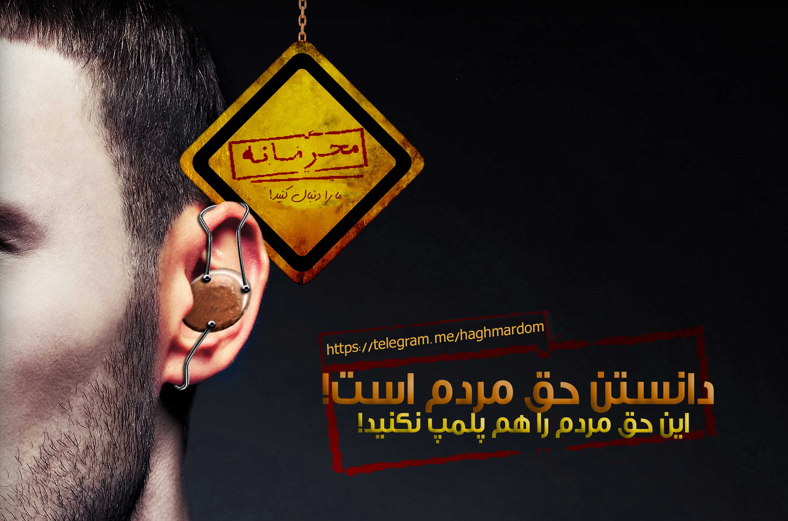

|
HSE IRAN
|
 همین الان به ما بپیوندید www.telegram.me/haghmardom طبقه بندی: پزشکی، خبر، انتصاب، تسلیت، تبریک، برچسب ها: دانستن حق مردم است، به ما بپیوندید، مارا دنبال کنید، کانال تلگرام، [ دوشنبه 9 آذر 1394 ] [ 10:16 ب.ظ ] [ سیداسعد حسینی ]
[ نظرات ]
معاون غذا و داروی دانشگاه علوم پزشکی شهید بهشتی از تعطیلی کارخانه محصولات غذایی دستچین به دلیل تخلفات متعدد بهداشتی خبر داد. جمشید سلام زاده در گفتوگو با تسنیم، درباره تعطیلی و پلمپ خط تولید شرکت تولید آبلیموی دستچین عنوان کرد: طی بازدیدی که دو و سه هفته قبل با کارشناسان سازمان غذا و داور از این کارخانه داشتیم، تخلفات بهداشتی متعددی ملاحظه شد که پرونده این تخلفات در کمیسیون تعزیرات دانشگاه تایید و کارخانه تعطیل شد. سلام زاده درباره مدت تعطیلی این کارخانه گفت: ما باید از سلامت محصولات مطمئن شویم و تضمینی در این باره ارائه شود، بنابراین زمان تعطیلی نیز بستگی به رای کمیسیون تعزیرات دارد، ولی انتظار است با توجه به تخلفاتی که از گذشته نیز درباره محصولات این کارخانه گزارش شده بود برخورد جدی صورت پذیرد. معاون غذا و داروی دانشگاه علوم پزشکی شهید بهشتی درباره نوع محصولاتی که این کارخانه در بهداشت آن متخلف شناخته شده بود، خاطرنشان کرد: این محصولات از جمله آبلیمو و همچنین موارد دیگری را نیز در بر میگیرد. چندی قبل نیز تسنیم در مطلبی عنوان کرده بود که بهمن ماه سال 93 اکیپ گشت مشترک اداره کل تعزیرات حکومتی استان تهران به ریاست امید شهرآبادی در بازدید از شرکت صنایع غذایی دستچین بهمن واقع در شهرستان پاکدشت، متوجه تولید و پخش آبلیموهای تقلبی با با نامهای تجاری دستچین، گلدست، نوشن آگین و دادلی شده بودند. بر اساس این گزارش، رئیس شعبه 54 اداره کل تعزیرات حکومتی استان تهران در همان روز، حکم به امحا 264 تُن و 400 کیلوگرم آبلیموی تقلبی این شرکت که غیرقابل مصرف انسانی بودن آن در آزمایشات تایید شده بود، داد و 60 تُن سرکه و 30 تُن مربا و خیارشور این شرکت که بدون مجوز ساخت، تولید شده بود به نفع دولت ضبط شد. پس از صدور حکم اولیه از سوی رئیس شعبه 54 اداره کل تعزیرات استان تهران، برای این شرکت در شعبه یاد شده پرونده تشکیل شد که پس از اظهارنظر کارشناسی معاونت دارو و غذای دانشگاه علوم پزشکی شهید بهشتی تهران مبنی بر غیر قابل مصرف انسانی بودن آبلیموهای تولید شده، شعبه 54، شرکت دست چین را به پرداخت 9 میلیارد و 287 میلیون ریال جزای نقدی در حق دولت و ممهور نمودن پروانه واحد به مهرذ تخلف اول محکوم کرد. رای صادره با اعتراض متهم به شعبه هشتم تجدیدنظر اداره کل تعزیرات حکومتی استان تهران ارجاع شد که شعبه تجدیدنظر پس از بررسی اسناد و مدارک موجود در پرونده، رای شعبه 54 را تایید و قطعی کرد. طبقه بندی: پزشکی، خبر، بهداشت، برچسب ها: پپلمپ، آبلیمو، کارخانه بزگ، [ شنبه 6 تیر 1394 ] [ 12:53 ب.ظ ] [ سیداسعد حسینی ]
[ نظرات ]
این جزوه فقط جهت اطلاع می باشد در صورت تغییر اطلاع رسانی از طریق همین وبلاگ صورت خواهد گرفت طبقه بندی: نیم سال چهارم، [ سه شنبه 5 خرداد 1394 ] [ 07:27 ب.ظ ] [ سیداسعد حسینی ]
[ نظرات ]
[ دوشنبه 4 خرداد 1394 ] [ 07:10 ق.ظ ] [ سیداسعد حسینی ]
[ نظرات ]
[ دوشنبه 4 خرداد 1394 ] [ 07:07 ق.ظ ] [ سیداسعد حسینی ]
[ نظرات ]
این ورژن جدیدی ترین است
دانلود کنید طبقه بندی: نیم سال چهارم، برچسب ها: حسابنداری و تنظیم بودجه، دانلود کنید، [ دوشنبه 4 خرداد 1394 ] [ 07:05 ق.ظ ] [ سیداسعد حسینی ]
[ نظرات ]
دوستانی که این ترم درس انقلاب اسلامی را دارند نمونه سوالات این درس به همراه پاسخ را می توانند دانلود کنند
دانلود کنید طبقه بندی: نیم سال چهارم، برچسب ها: انقلاب اسلامی، دانولد کنید، [ دوشنبه 4 خرداد 1394 ] [ 07:02 ق.ظ ] [ سیداسعد حسینی ]
[ نظرات ]
[ دوشنبه 14 اردیبهشت 1394 ] [ 06:32 ق.ظ ] [ سیداسعد حسینی ]
[ نظرات ]
هرگاه قرار است به برنامههای قبلیتان بازگردید به خودتان بیش از حد فشار نیاورید و همه چیز را آسان بگیرید. به خودتان یادآور شوید که تعطیلات برایتان بسیار خوب بوده و فرصتی فراهم کرده که بتوانید با شادابی بیشتر به کار و زندگیتان برگردید و همه چیز را از سر بگیرید ادامه مطلب طبقه بندی: پزشکی، بیماری های غیر شغلی، بهداشت، برچسب ها: افسردگی، تعطیلات نورزو، [ یکشنبه 16 فروردین 1394 ] [ 07:00 ق.ظ ] [ سیداسعد حسینی ]
[ نظرات ]
[ سه شنبه 7 بهمن 1393 ] [ 04:23 ب.ظ ] [ سیداسعد حسینی ]
[ نظرات ]
[ دوشنبه 29 دی 1393 ] [ 06:16 ب.ظ ] [ سیداسعد حسینی ]
[ نظرات ]
جلسه هفتم به بعد طبقه بندی: نیم سال سوم، خدمات بهداشتی در سوانح، امداد و نجات، برچسب ها: دانلود کنید، بهداشت در سوانح، [ چهارشنبه 24 دی 1393 ] [ 09:08 ب.ظ ] [ سیداسعد حسینی ]
[ نظرات ]
فایل اصلاح شده مساله یابی 11/10/93 طبقه بندی: نیم سال سوم، امداد و نجات، برچسب ها: دانلود کنید، مساله یابی، [ پنجشنبه 11 دی 1393 ] [ 01:54 ب.ظ ] [ سیداسعد حسینی ]
[ نظرات ]
[ یکشنبه 23 آذر 1393 ] [ 07:22 ب.ظ ] [ سیداسعد حسینی ]
[ نظرات ]
طبقه بندی: کاربرد تجهیزات در سوانح، نیم سال سوم، امداد و نجات، برچسب ها: دانلود کنید، تجهیزات برش و جابجایی، [ یکشنبه 23 آذر 1393 ] [ 07:18 ب.ظ ] [ سیداسعد حسینی ]
[ نظرات ]
|
درباره وبلاگ  |
| مرجع قالب وبلاگ در میهن تمپ - طراح قالب : پیچک |